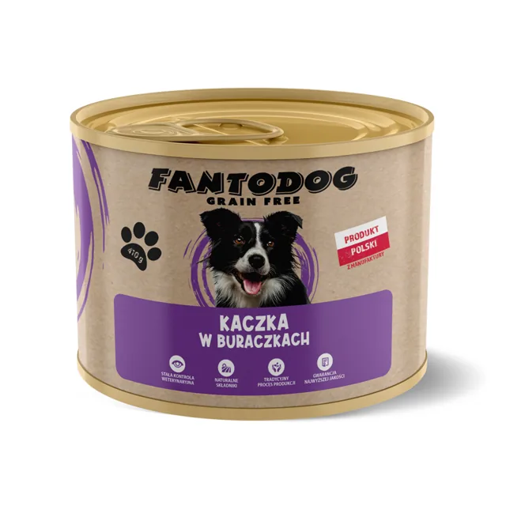

Bez zbóż
FantoDog - marka własna
Kaczka z Batatami i Pomarańczami 2 kg
Hipoalergiczna karma z dużą zawartością świeżego mięsa z kaczki, wzbogacona batatami i pomarańczami. Polecana dla psów z wrażliwym układem pokarmowym.
- Kaczka 50%
- Bez zbóż
- Omega 3 i 6
- Konserwowana rozmarynem
Dlaczego ta karma
Mięso z kaczki na poziomie 50%Źródło białka o niskiej zawartości tłuszczu, bogate w aminokwasy, minerały i witaminy: żelazo, selen, cynk i witaminy z grupy B.
Receptura bez dodatku zbóżSkomponowana z myślą o psach z nietolerancją bądź wrażliwością na ziarna zbóż.
Bataty zamiast zbóżŹródło węglowodanów z wysokim poziomem beta-karotenu, wspierają funkcjonowanie układu trawiennego.
PomarańczeŹródło witaminy C, która wspiera funkcjonowanie układu odpornościowego.
Kwasy Omega 3 i 6EPA i DHA wspierają pracę mózgu i układu nerwowego oraz zmniejszają podatność na stany zapalne.
Stawy i trawienieKolagen ze świeżo przygotowanych składników oraz prebiotyki MOS i FOS dla prawidłowej flory jelit.
Skład
Kaczka 50% (w tym świeżo przygotowana kaczka 28%, suszona kaczka 20% i bulion z kaczki 2%), bataty (26%), groszek (6%), ziemniaki, pulpa buraczana, siemię lniane, suplement omega-3, minerały, witaminy, bulion warzywny, pomarańcza (0,3%), żurawina, FOS (96 mg/kg), MOS (24 mg/kg).
Składniki analityczne
Białko surowe 26%, tłuszcz surowy 14%, włókno surowe 3%, popiół surowy 8%, wilgotność 8%, omega-6 2,2%, omega-3 1%, wapń 1,8%, fosfor 1,1%. Energia metaboliczna 371 kcal/100 g.
Ile podawać dziennie
| Waga psa | Dzienna dawka |
|---|---|
| 1 - 5 kg | 25 - 85 g |
| 5 - 10 kg | 85 - 145 g |
| 10 - 20 kg | 145 - 245 g |
| 20 - 30 kg | 245 - 330 g |
| 30 - 40 kg | 330 - 410 g |
| powyżej 40 kg | ponad 410 g |
Każdy pies jest inny, dawkę dostosuj do rasy, wieku, temperamentu i aktywności. Nową karmę wprowadzaj stopniowo przez dwa tygodnie i zapewnij psu stały dostęp do świeżej wody.
Z tej samej rodziny

